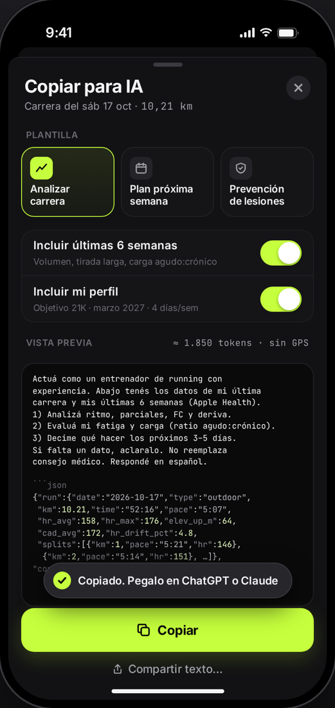
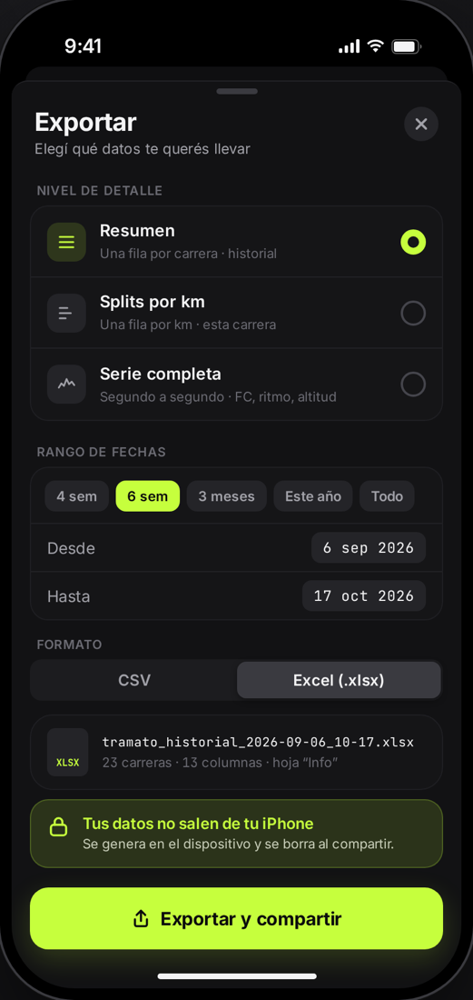

Tramato lee tus carreras de Apple Salud —las de Strava, Apple Watch, Garmin o Nike Run Club— y te muestra lo que importa: parciales por km, mejores marcas, carga de entrenamiento y un resumen listo para pegarle a ChatGPT o Claude.
Para iPhone con iOS 17 o posterior. Gratis.
Si ya registrás tus carreras con cualquier app, Tramato las encuentra en Salud. Y si salís solo con el celular, también graba.
Ritmo km a km, frecuencia cardíaca, deriva, altitud y cadencia, con mapa del recorrido.
Un resumen compacto de tu carrera y tus últimas semanas para pedirle un análisis o un plan a ChatGPT o Claude.
GPS, pausa automática, avisos de voz y control desde la pantalla bloqueada y la Dynamic Island.
Series por distancia o tiempo con ritmo objetivo. La voz te avisa cada paso y si vas rápido o lento.
Tu mejor 1K, 5K, 10K, media y maratón, buscadas dentro de cada carrera.
Objetivo de km semanal con racha, aviso cuando subís la carga demasiado rápido y widget en la pantalla de inicio.
Sumá el GPX o FIT de una carrera y obtené parciales aunque Strava no los haya guardado en Salud.
Tu historial, los parciales o la serie completa a CSV o Excel, para analizarlos como quieras.
Una imagen con distancia, tiempo, ritmo y el dibujo del recorrido, para tus historias.


Tramato no tiene servidores, cuentas ni publicidad. Todo se calcula en tu teléfono, y los datos solo salen si vos exportás, copiás o compartís algo.
Leer la política de privacidad →Tramato está en prueba en TestFlight. Instalá TestFlight desde la App Store y abrí la invitación que te llegó por mail.